SKEUOMORPHISM
The term skeuomorph is compounded from the Greek: skéuos, σκεῦος (container or tool), and morphḗ, μορφή (shape). It has been applied to material objects since 1890[6] and is now also used to describe computer and mobile interfaces.[7]
A similar alternative definition of skeuomorph is "a physical ornament or design on an object made to resemble another material or technique". This definition is broader in scope, as it can be applied to design elements that still serve the same function as they did in a previous design.
Skeuomorphs may be deliberately employed to make a new look more familiar and comfortable, or may be the result of cultural influences and norms on the designer. They may be artistic expression on the part of the designer.[7] Donald Norman, an academic in the fields of design, usability, and cognitive science, describes cultural constraints, interactions with the system in question that are learned only through culture, that give rise to skeuomorphism. Norman also popularized perceived affordances, where the user can tell what an object provides or does based on its appearance, which skeuomorphism can make easy.[8]
The concept of skeuomorphism overlaps with other design concepts. Mimesis is an imitation, coming directly from the Greek.[9] Archetype is the original idea or model that is emulated, where the emulations can be skeuomorphic.[10] Skeuomorphism is parallel to, but different from, path dependence in technology, where an element's functional behavior is maintained when the reasons for its design no longer exist.

skeuomorphism
·"Skeuomorph". Oxford Dictionaries. Oxford University Press. Retrieved 2016-01-22.
·"Skeuomorph". Dictionary.com Unabridged. Random House. Retrieved 2016-01-22.
·Basalla, George (1988). The Evolution of Technology. Cambridge, UK: Cambridge University Press. p. 107. ISBN 0-521-29681-1.
·"Skeuomorph". dictionary.com. Retrieved 7 December 2012.
·Thompson, Clive. "Clive Thompson on Analog Designs in the Digital Age". Wired Magazine. Retrieved 7 December 2012.
·March, H. Colley (1890). Transactions of the Lancashire and Cheshire Antiquarian Society. The Lancashire and Cheshire Antiquarian Society. p. 187.
·Gessler, Nicholas. "Skeuomorphs and Cultural Algorithms". Retrieved 7 December 2012.
·Norman, Donald. "Affordances and Design". Retrieved 2012-12-03.
·Janusheske, Jeffrey. "Thesis: Mimesis to Skeuomorph?". Retrieved 2012-12-03.
·Sen, Rahul. "Archetypes and Their Use in Mobile UX". Retrieved 2012-12-03.